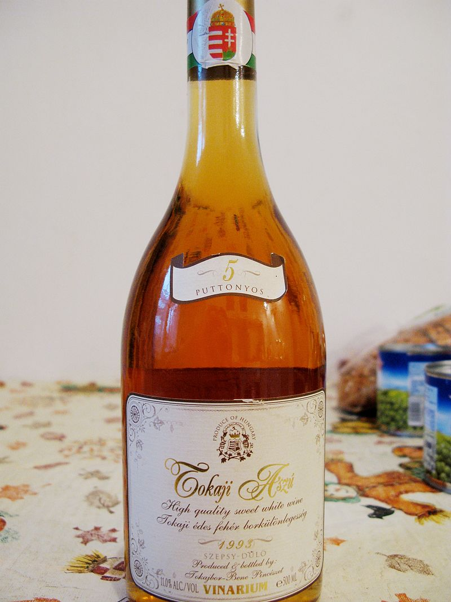

Tokaji aszú - valami hasznos róla
A tokaji aszú vagy röviden aszú a Tokaji borvidéken előállított aszúbor, vagyis aszúsodott szőlő felhasználásával készített desszertbor, borkülönlegesség. A tokaji borok közül a leghíresebb. Egy puttony (28-30 liter) aszúszemből mindössze 1-1,5 liter tokaji esszencia lesz. Évszázados technológia alkalmazásával készül, amelynek alapja az aszúsodott szőlőszemek késői szüretelése és az ezt követő különleges borkészítési eljárás. A 6 puttonyos aszúnál magasabb beltartalmi értékekkel (maradék cukor, szárazanyag, sav) rendelkező bor a tokaji esszencia.
